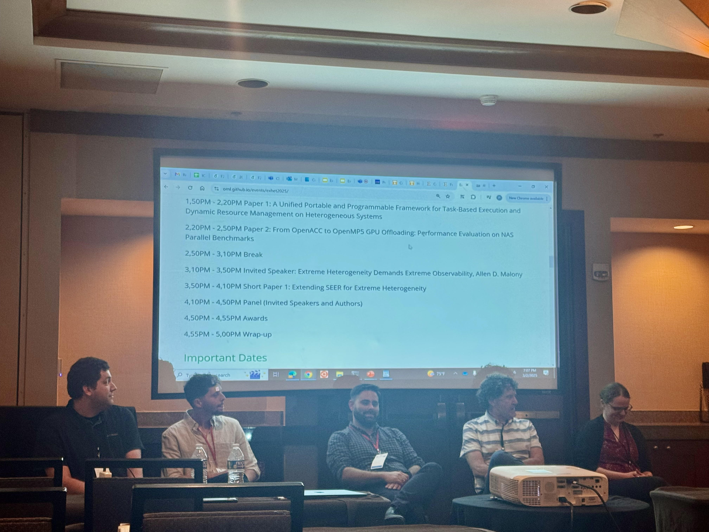

About
I am a Researcher and Algorithms Developer at the Israel Atomic Energy Commission (since 2019), as well as a Ph.D. student in the Computer Science Department at Ben-Gurion University. My primary interests lie in the fields of High-Performance Computing, Parallel and Distributed Computing, Algorithms, Artificial Intelligence, Computer Vision, and Image Processing. Spinning is my favorite exercise!
Education
Ph.D. Student in Computer Science, Ben-Gurion University, (2023-present)
Fields:
Distributed Computing, Recoverable Data Structures, Persistent Memory, Emerging TechnologiesSupervisors:
Prof. Danny Hendler, Prof. Hagit Attiya, Dr. Gal OrenM.Sc. in Computer Science, Ben-Gurion University, (2019-2023)
Thesis:
Recoverable Algorithms in HPC Systems Using NVRAM TechnologySupervisors:
Prof. Danny Hendler, Prof. Hagit Attiya, Dr. Gal OrenB.Sc. in Computer Science and Mathematics, Tel Aviv University, Israel, (2016-2019)
* graduation with distinction
Publications
Awards
Pazy Award for excellent research funded by the Pazy Foundation, 2023.
IEEE TCHPC Travel Award for attending the SC Conference, Dallas, Texas, 2022.
Grant of excellence for academic achievements on behalf of the School of Computer Science, Tel‐Aviv University, 2019.
"Club‐100" grant of excellence for academic achievements, IDF, 2019.
Gallery
International Workshop on Extreme Heterogeneity Solutions, PPoPP25, Las Vegas (March 2025)

IXPUG Workshop, SC22, Dallas (November 2022)

ISC22, Hamburg (May 2022)
Grant of excellence, Tel Aviv University (2019)